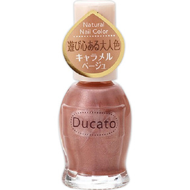

返回列表
产品名称：デュカート ナチュラルネイルカラーＮ 16 キャラメルベージュ

シャンテイ デュカート ナチュラルネイルカラーＮ 16 キャラメルベージュ ＿
メーカー シャンテイ
JANコード 4901604693383
商品の特徴
遊び心ある大人色
- 成分・分量
- 酢酸ブチル、酢酸エチル、ニトロセルロース、(アジピン酸/ネオペンチルグリコール/無水トリメリト酸)コポリマー、クエン酸アセチルトリブチル、イソプロパノール、アクリレーツコポリマー、マイカ、ステアラルコニウムベントナイト、酸化チタン、(スチレン/アクリレーツ)コポリマー、ブタノール、シリカ、オキシベンゾン-1、ジ安息香酸トリメチルペンタンジイル、酸化鉄、ポリビニルブチラール、アルミナ、ジメチコン、トリメチルシロキシケイ酸、メチコン、カーボンブラック、水酸化Al、赤220、硫酸Ba
- 用法及び用量
- 爪の表面を清潔にし、完全に乾かしてから爪にムラなく塗ります。